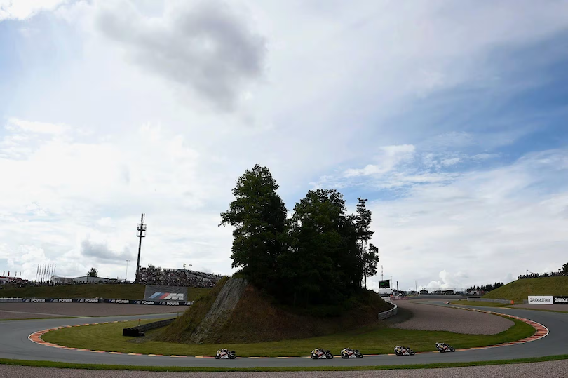

Datos del circuito
- Nombre: Sachsenring
- País: Alemania
- Localidad: Hohenstein-Ernstthal
- Longitud del circuito: 3671 metros
- Anchura media: 12 metros
Carrera
- Fecha: 2025-07-13
- Hora (España): 14:00:00
- Vueltas: 30
- Patrocinador: Liqui Moly Grand Prix of Germany 2025
- Resultado:
- Vencedor: Marc Márquez
- Tiempo: 00 horas, 40 minutos y 42.854 segundos
Clasificación mundial
Clasificación mundial al finalizar la carrera
| Posición |
Piloto |
| 1 |
Marc Márquez |
| 2 |
Álex Márquez |
| 3 |
Francesco Bagnaia |
Media
Imágenes

Vídeos
Video pilotos